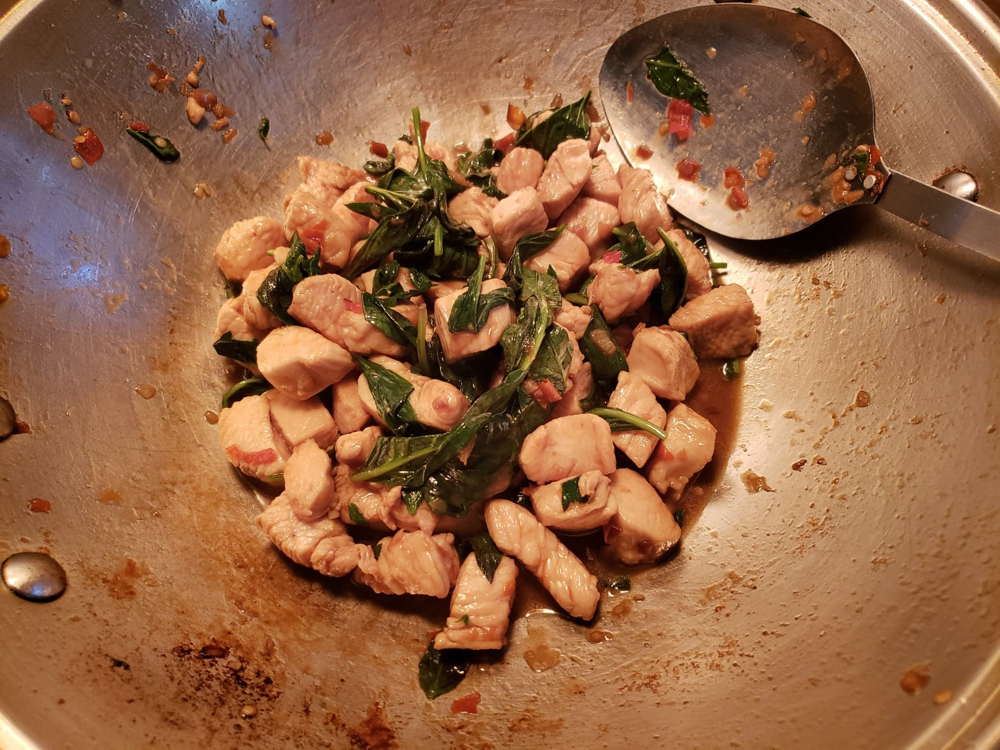

Pad Kra Pao Gai (Thai Basil Chicken)

Ingredients:
Sauce:
- 1 tsp Oyster sauce
- 1/2 tsp Sugar
- 1/2 tsp Light soy sauce
- 1/2 tsp Dark soy sauce
Other Ingredients:
- 1 lb Chicken breast, cut into cubes
- 5 cloves Garlic, coarsley chopped
- 4 Thai chilies, coarsley chopped
- 1 tbsp Vegetable oil
- 1 cup Thai holy basil leaves, or substitute Thai sweet basil
Instructions:
- Pound the garlic and chilies in a mortar and pestle until a rough paste. Also, combine the sauce ingredients in a bowl.
- Heat the vegetable oil in a wok over high heat. When the oil is hot, add the chilies and garlic. Stir fry them for about 20 seconds or until they get really fragrant, but do not let them burn or get too dry.
- Add in the chicken while stir-frying continuously. Stir-fry the chicken until it is just fully cooked, about 2-3 minutes. If it starts to get dry, add a very small splash of water.
- Add the sauce to the wok and stir-fry for about 30 seconds or until the sauce thickens.
- Toss in the basil and fold it into the chicken. Immediately remove the wok from the heat. Stir until the basil becomes wilted from the residual heat of the chicken.